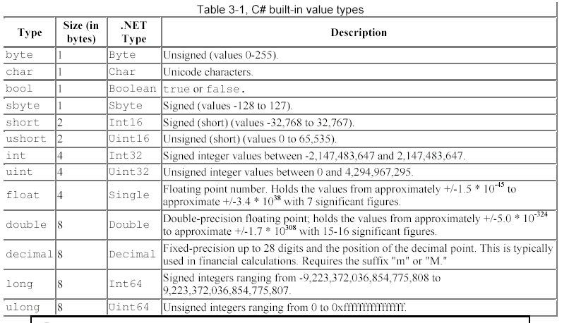
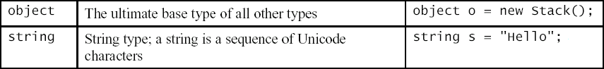
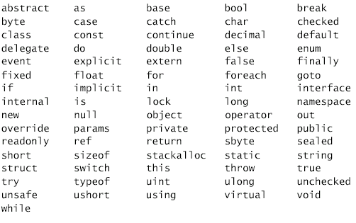
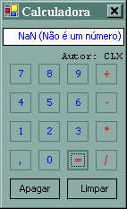
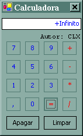
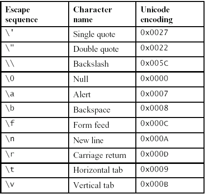
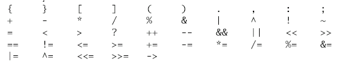
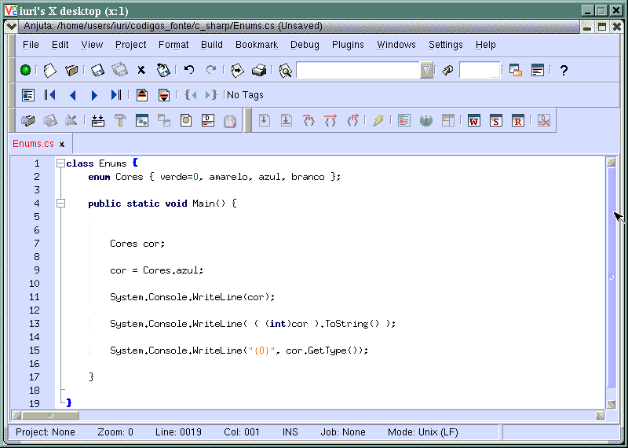
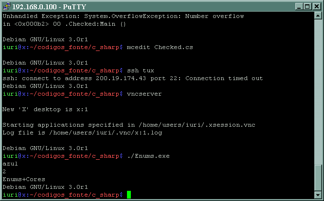
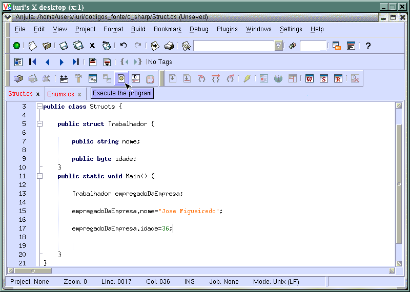

Este módulo especifica como C# trata os tipo de dados da .NET Framework.
Última revisão: 21/07/2003
Página do projeto: http://tux.lcc.ufrn.br/~iuri/projeto
Variáveis são espaços na memória do computador que um programa usa para guardar algumas informações que serão utilizadas por ele, são chamadas de variáveis porque podem a qualquer momento mudar o conteúdo da informação guardada.
Em .NET existem dois tipos de variáveis, tipos por valor ou por referência. Tipos por valor, são variáveis que contém as informações diretamente e tipos por referência são variáveis que contém informações sobre onde um certo dado está armazenado. Quando você chama uma variável do tipo por valor ela devolve o dado real, diferente do tipo por valor, que devolve onde o dado está localizado na memória do computador e a partir daí o programa acessa este endereço de memória e obtém o dado.
Tabela de tipos por valor inclusos em C#:

Alguns tipos por referência inclusos da .NET Framework:

A declaração de uma variável tem sempre a seguinte notação:
Tipo NomeDaVariável;
Você não é obrigado a declarar suas variáveis no início de cada bloco.
Nomes de variáveis devem começar com uma letra ou um sublinhado("_") e podem conter números, letras e sublinhado. Variáveis em letras maiúsculas são diferentes de variáveis de letras minúsculas, nOmE e Nome são variáveis diferentes.
Nenhuma variável pode ter o mesmo nome de uma palavra reservada da linguagem. Segue as palavras reservadas de C#:

Todas as variáveis em C# são objetos de alguma classe de tipos da .NET(veja a primeira tabela) e derivam da classe base object. Como todas as variáveis são objetos, naturalmente elas possuem métodos e propriedades:
int x = 16;
Console.WriteLine( x.ToString() );
Variáveis do tipo inteiro guardam dados numéricos não fracionários, isto é, sem ponto decimal.
Os tipos são:
byte, sbyte, int, uint, long, ulong, short, ushort.
Exemplos:
sbyte num = 12;
byte valor = 255;
int valor = 123;
uint resultado= 42024124386;
long resultado = - 4445680;
ulong matricula = 12312362532173421743;
short index = 32767;
ushort index = 65535;
São utilizados em comparações e podem assumir verdadeiro ou falso(true ou false).
Tipo:
bool
Exemplos:
bool masculino = true;
bool ativado = false;
Armazenam um caractere formato unicode.
Tipo:
char
Exemplos:
char CaractereY = 'Y'; //
armazena Y
char CaractereY = '\x0057'; // armazena Y usando seu valor
hexadecimal
char CaractereY = (char) 87; // armazena Y convertido de um inteiro
char CaractereY = '\u0057'; // armazena Y usando seu valor Unicode
Armazenam números reais.
Observações:
As operações envolvendo pontos flutuantes não geram exceções:
|  |  |
| Resultado da divisão de 0 por 0 | Resultado da divisão de 3 por 0 |
Tipos:
double, float, decimal
Exemplos:
float x = 3.5;
double y = 3;
decimal z = 300.5;
Uma string pode conter até 1 gigabyte de caracteres e é alocada dinamicamente.
Tipo:
string
Exemplos:
string FraseA = "Que dia ";
string FraseB = "lindo";
Console.WriteLine( "Esta é a minha frase: " + FraseA + FraseB );
Todas as variáveis são inicializadas automaticamente para um valor padrão do tipo, normalmente zero.
Converter diferentes diferentes tipos de dados é uma tarefa comum em programação, converter números reais para inteiros, números inteiros para reais, strings para números, números para strings. As conversões podem ser automáticas ou manuais. As conversões automáticas são feitas quando o tipo a receber o valor ( do lado esquerdo da atribuição) puder conter TODOS os possíveis valores da expressão (do lado direito do operador de atribuição)
Você pode utilizar de métodos ao fazer suas conversões de valores, elas são necessárias entre os seguintes tipos de dados:
Para converter um inteiro ou um ponto flutuante para uma string basta chamar o método .ToString(), exemplo:
int x = 16;
float y = 20;
string meusNumeros = "Estes são meus números: " + x.ToString() +
" e " + y.ToString();
para converter uma string para inteiro ou um ponto flutuante chamamos o método estático .Parse(string s) do tipo de dado em questão, exemplo:
Console.Write("Escreva um número: ");
string temporario = Console.ReadLine();
int numero = int.Parse(temporario);
Para converter realizar conversões em cast, você chama o operador assim:
(tipo) dado;
Exemplo:
int n = 16;
double m = 15.6;
double k = 14.4;
double y;
y = (double) n; // y vale 16
y = (int) m; // y vale 15
y = (int) k; // y vale 14
y = (int) m + (int) k; // y vale 29
y = (int)( m + k ); // y vale 30
Se ao aplicarmos uma conversão e o valor não couber no dado, não geramos um erro. Observe o seguinte código
int N;
byte B;
N = 10;
// Esta conversão funciona, pois 10 cabe em um byte
B = (byte) N;
N = 1000;
// Esta conversão não funciona, mas não gera erro
B = (byte) N;
Caso quiséssemos que a conversão gere uma exceção. Devemos colocá-la num bloco checked
int N;
byte B;
N = 1000;
checked {
// Esta conversão irá gerar uma exceção do tipo: "Number overflow".
B = (byte) N;
}
Sufixo são maneiras de garantir que constantes sejam de um certo tipo:
Exemplos:
// constantes do tipo long ou ulong
long valor1 = 10L;
ulong valor 2 = 10L;
// constantes do tipo uint ou ulong
uint valor3 = 10u;
ulong valor4 = 10u;
// constantes do tipo ulong
ulong valor5 = 10ul;
ulong valor6 = 10LU;
// constantes do tipo float
float x = 10.7f;
// constantes do tipo double
double y = 100.704d;
// constantes do tipo decimal;
decimal d = 100.123312M;
Seqüências de escape são utilizadas para representar caracteres que não possui representação no teclado ou que não são possíveis o uso direto em strings.

Além destas seqüências a seqüência \uNNNN, onde NNNN é o código unicode de um caractere.
Você pode entretanto usar uma string iniciada por @, assim ela irá ignorar as seqüências de escape da string;
Exemplos:
string a = "c:\\windows\\command.com"; // a vale
c:\windows\command.com
string a = @"Numero1\nNumero2\n"; // a vale Numero1\nNumero2\n
Os operadores disponíveis em C#, são os seguintes e eles possuem a mesma função que em C++:

Enum é um tipo definido pelo usuário que associa nomes a números pois fazem mais sentido para qualquer um ler o código. Enums se comportam tanto como strings como inteiros.
exemplo:


Permite declarar tipos que contêm diversos valores identificados pelo nome.
Como em C++, as estruturas podem ter métodos e construtores. Não é possível declarar um construtor que não aceite argumentos

Independente do tipo, todas as variáveis podem ser inicializadas com o operador new.
Exemplos:
int N2 = new int();
bool Socio = new bool();
Arrays são coleções de um certo tipo de dados. São como matrizes com contém elementos que podem ser acessados em tempo de execução.
Sempre que um array for declarado com um certo tipo, ele será válido para todos os itens do array. A declaração de um array sempre tem um [] depois do tipo da variável.
O array pode ter diversas dimensões, mas o primeiro índice é sempre zero.
Todo array deve ser inicializado, e para qualquer índice referenciado fora da faixa será gerado uma exception.
Um array de várias dimensões pode ser declarado colocando vígulas dentro dos colchetes. Outra possibilidade é declarar um array de outro array.
exemplos:
double[] Notas = new double[5];
int[] numeros = new int[100];
Notas[0] = 6;
Notas[1] = 10;
int[] a1; //uma dimensão
int[,] a2; //duas dimensões
int[,,] a3; //três dimensões
int[][] a4; // aninhamento, array de array
int[][][] a5; //array de array de array
int[] b1 = new int[] { 1, 2, 3};
int[,] b2 = new int[,] {{1,2,3}, {4,5,6}};
int[][] b3 = new int[3][];
b3[0] = new int[] { 1,2,3 };
b3[1] = new int[] { 4,5,6 };
b3[2] = new int[] { 7,8,9,10 };
int[] c1 = {1,2,3};